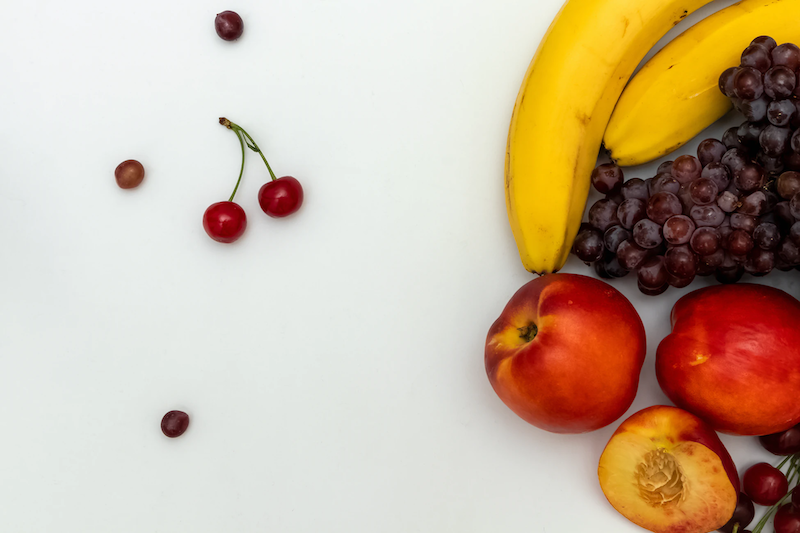

👩🏫 JS Basics 07 - Les tableaux
Objectifs
- Créer des tableaux
- Déterminer la longueur d'un tableau (le nombre d'éléments qu'il contient)
- Lire et écrire des éléments d'un tableau
- Utiliser des méthodes basiques pour manipuler les tableaux
Pré-requis
Introduction
Dans les quêtes précédentes, tu as découvert ce qu'est le Javascript et à quoi ressemble sa syntaxe. Nous avons également appris à créer des variables et les différents types de données que nous pouvons utiliser en Javascript.
Au cours de cette quête, nous parlerons des tableaux. Les tableaux sont un excellent moyen de manipuler plusieurs valeurs groupées. Dans cette quête, nous verrons comment créer et manipuler des tableaux en JavaScript.
Commençons !

Sommaire
C'est quoi un tableau ?
Un tableau est une structure de données utilisée pour regrouper plusieurs éléments en un seul endroit.
Imaginons que nous voulions créer une application qui livre des fruits. Pour l'instant, sans tableau, nous devrions créer une variable pour chaque fruit.
const kiwi = "Kiwi";
const apple = "Apple";
const pineapple = "Pineapple";
// ...
Cela peut être très long, n'est-ce pas ?
Nous pourrions plutôt créer un tableau avec une liste de fruits :
const fruits = ["Kiwi", "Apple", "Pineapple"];
Pour créer un tableau, utilise les crochets [] et écris à l'intérieur les éléments que tu veux.
Les éléments doivent être séparés par une virgule.
Un tableau peut contenir tout type de données : nombre, booléen, chaîne de caractères, objet, fonction ou d'autres tableaux.
const myArray = ["Hello", 123, true, ["Hey", "Ho"]];
Accéder à un élément du tableau
Pour accéder à un élément du tableau, tape le nom du tableau et la position de l'élément auquel tu veux accéder entre les crochets.
En JavaScript, la position (index) du premier élément est toujours 0.
const fruits = ["Kiwi", "Apple", "Pineapple"];
console.log(fruits[0]); // will print "Kiwi"
console.log(fruits[1]); // will print "Apple"
console.log(fruits[2]); // will print "Pineapple'
Tu peux également définir la valeur d'un élément spécifique dans un tableau
fruits[0] = "Banana";
console.log(fruits[0]); // will print "Banana"
https://repl.it/@WildCodeSchool/MountainousRecentProprietarysoftware
Clique sur "Play" pour lancer le code. Tu peux également modifier le code et tester différents scénarios par toi-même.
🔬 Fais une expérience
Essaye de créer un tableau avec des noms d'animaux. Utilise console.log pour afficher le tableau.
https://repl.it/@WildCodeSchool/WornHelplessStructure
Voir la solution
const animals = ["Lion", "Monkey", "Tiger"];
console.log(animals);
Obtenir la longueur d'un tableau
Pour obtenir le nombre d'items du tableau, nous pouvons utiliser array.length.
const fruits = ["Kiwi", "Apple", "Pineapple"];
console.log(fruits.length); // will print 3
Les méthodes des tableaux
Comme nous l'avons appris dans les cours précédents, un tableau est un type spécifique d'objet, et en tant qu'objet, les tableaux sont accompagnés d'un tas de méthodes.
Ces méthodes sont des fonctions que nous pouvons utiliser pour manipuler les tableaux.
Ajouter un élément à un tableau
Push
Prends notre exemple précédent avec le tableau de fruits.
Imagine que nous voulions ajouter un nouveau fruit au tableau. Pour cela, nous utiliserions la méthode push.
Il suffit d'exécuter la méthode push et de donner le nouvel élément en argument :
const fruits = ["Kiwi", "Apple", "Pineapple"];
fruits.push("Banana");
console.log(fruits);
// ["Kiwi", "Apple", "Pineapple", "Banana"]
Push ajoutera l'élément à la fin du tableau.
🔬 Fais une expérience
Ajoute un nouvel animal à la fin du tableau. Utilise console.log pour vérifier le tableau.
https://repl.it/@WildCodeSchool/PoliticalIncredibleStrategies
Voir la solution
const animals = ["Lion", "Monkey", "Tiger"];
animals.push("Cat");
Unshift
Si tu veux ajouter un élément au début du tableau, utilise la méthode unshift.
const fruits = ["Kiwi", "Apple", "Pineapple"];
fruits.unshift('Strawberry');
console.log(fruits);
// ["Strawberry", "Kiwi", "Apple", "Pineapple"]
🔬 Fais une expérience
Insère un nouvel animal au début du tableau. Utilise console.log pour vérifier le tableau.
https://repl.it/@WildCodeSchool/PoliticalIncredibleStrategies
Voir la solution
const animals = ["Lion", "Monkey", "Tiger"];
animals.unshift("Cat");
Supprimer un élément du tableau
Pop
Pour supprimer le dernier élément d'un tableau, utilise la méthode pop.
fruits.pop();
console.log(fruits);
// [ "Kiwi", "Apple" ]
🔬 Fais une expérience
Retire le dernier animal à la fin du tableau. Utilise console.log pour vérifier le tableau.
https://repl.it/@WildCodeSchool/PoliticalIncredibleStrategies
Voir la solution
const animals = ["Lion", "Monkey", "Tiger"];
animals.pop();
Shift
Pour supprimer le premier élément, utilise shift.
fruits.shift();
console.log(fruits);
// [ "Apple" ]
🔬 Fais une expérience
Supprime le premier animal du tableau. Utilise console.log pour vérifier le tableau.
https://repl.it/@WildCodeSchool/PoliticalIncredibleStrategies
Voir la solution
const animals = ["Lion", "Monkey", "Tiger"];
animals.shift();
false|||true|||false
# Comment accéder à un élément d'un tableau ?
[] array.0;
[x] array[0];
[] array.name;
# Comment accéder au premier élément d'un tableau ?
[x] array[0];
[] array[1];
[] array[2];
# Comment accéder à la longueur d'un tableau ?
[] array.length();
[x] array.length;
[] array.getLength();
# Comment ajouter un élément à la fin d'un tableau ?
[x] Push
[] Pop
[] Shift
[] Unshift
# Comment supprimer le premier élément d'un tableau ?
[x] Shift
[] Pop
[] Unshift
[] Push
Résumé
- Un tableau est une liste de valeurs JavaScript regroupées en un seul endroit
- Tu peux accéder aux éléments d'un tableau en utilisant les crochets et un nombre indiquant la position de l'élément auquel tu souhaites accéder
- Attention, la numérotation des positions commence à 0 et non à 1 !
- Les tableaux sont dotés de méthodes que nous pouvons utiliser pour les manipuler
Une bonne ressource qui explique ce qu'est un tableau en Javascript
Tu pourras découvrir ici l'intégralité des méthodes disponibles pour manipuler les tableaux
Challenge
Dans ce challenge, tu dois manipuler des éléments à l'intérieur de tableaux en utilisant ce que nous avons appris jusqu'à présent dans les quêtes.
Recopie ce code et modifie le pour passer tous les tests dans les console.log :
// Here are our Astro signs provided as a string.
const aries = `♈`,
taurus = `♉`,
gemini = `♊`,
cancer = `♋`,
leo = `♌`,
virgo = `♍`,
libra = `♎`,
scorpio = `♏`,
sagittarius = `♐`,
capricorn = `♑`,
aquarius = `♒`,
pisces = `♓︎`;
// In Western Astrology there are 12 signs, organized by Earth Elements (Eart, Water, Air, Fire)
// You are going to manipulate the following arrays along with this challenge:
const fireSigns = [aries, leo];
const earthSigns = [taurus, virgo, capricorn, sagittarius];
const airSigns = [pisces, gemini, libra, aquarius];
const waterSigns = [scorpio, pisces];
/* 🏁 Add one final element to an array
Sagittarius is missing from fire signs please add it at the
END of the array and verify the result.
*/
// ✒️ Write your code here
console.log(
fireSigns[fireSigns.length - 1] === "♐"
? "Good Answer ✅"
: "Wrong Answer ❌"
);
/* 🏁 Remove the last element of an array
Sagittarius should not be on earth Signs, please remove
Sagittarius from the array, and verify the result.
*/
// ✒️ Write your code here
// the line below is for testing, don't touch it :)
console.log(earthSigns[earthSigns.length - 1] !== "♐" ? "Good Answer ✅" : "Wrong Answer ❌");
/* 🏁 Remove one element at the begining of an array
Pisces should not be on air Signs, please remove Pisces
from the array, and verify the result.
*/
// ✒️ Write your code here
// the line below is for testing, don't touch it :)
console.log(airSigns[0] !== "♓︎" ? "Good Answer ✅" : "Wrong Answer ❌");
/* 🏁 Add one element at the beginning of an array
Cancer is missing from water signs please add it at the
BEGINNING of the array and verify the result.
*/
// ✒️ Write your code here
// the line below is for testing, don't touch it :)
console.log(waterSigns[0] === "♋" ? "Good Answer ✅" : "Wrong Answer ❌");
Poste ton code en solution.
Critères d'acceptation
- [ ] La console ne doit pas afficher "Wrong Answer ❌"
- [ ] Les
console.logn'ont pas été modifiés